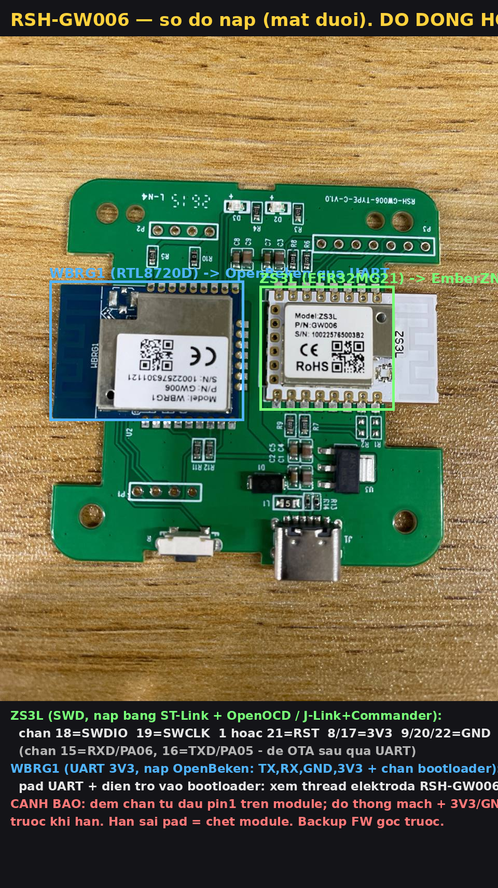
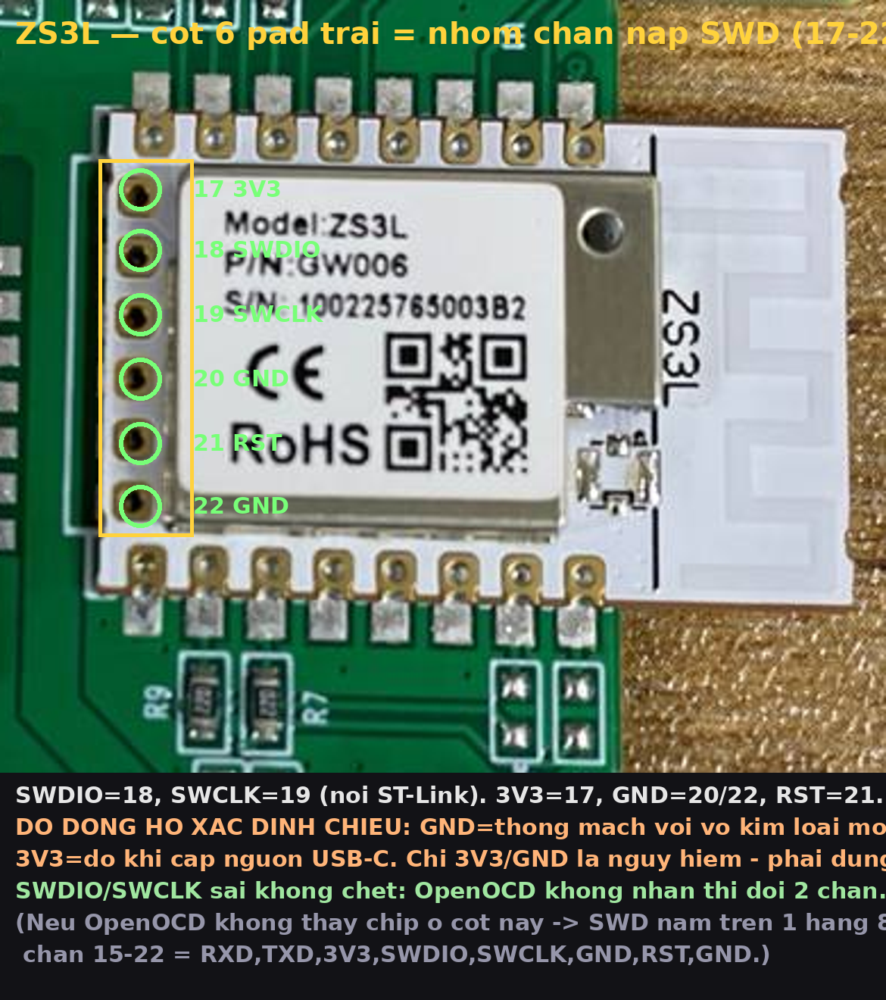

DÒ ĐỒNG HỒ TRƯỚC KHI HÀN. Backup firmware gốc trước. Hàn sai pad = chết module.


Cột 6 pad trái = nhóm nạp. SWDIO=18, SWCLK=19. DÒ ĐỒNG HỒ xác định 3V3 (đo khi cấp nguồn) + GND (thông mạch với vỏ module) để biết chiều; SWDIO/SWCLK sai không chết, OpenOCD không nhận thì đổi.
| Chân | Tín hiệu |
|---|---|
| 18 | SWDIO |
| 19 | SWCLK |
| 1 / 21 | RST |
| 8, 17 | 3V3 |
| 9, 20, 22 | GND |
| 15 | RXD (PA06) — OTA sau |
| 16 | TXD (PA05) — OTA sau |
Chân 17-22 là "burning pin", mặc định không ra header → hàn thẳng castellation module, đếm từ dấu pin1.
Cần TX, RX, GND, 3V3 + chân vào bootloader. Pad chính xác + điện trở bootloader: thread elektroda RSH-GW006 (topic4127578).
pip install universal-silabs-flasher để OTA ZS3L qua UART sau khi có bootloader.socket://<ip>:<port>. Migrate khỏi CC2531.